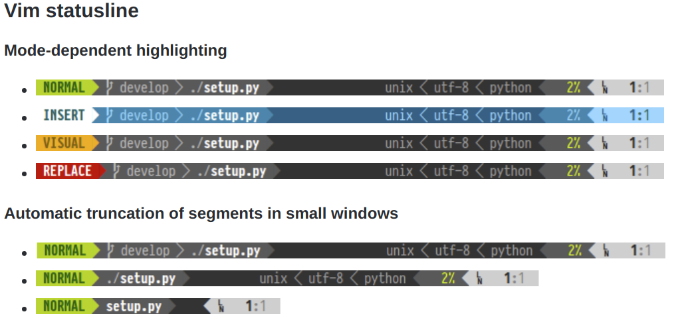
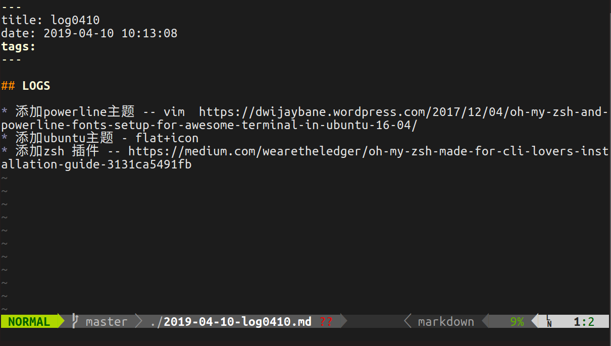

vim美化: Powerline
Powerline for vim
emm原始的vim太丑了最近看上了Powerline 的样式于是就配置一下。主要是眼馋vim下的powerline实在漂亮

所以那就配置吧！
Step 1 下载一些必要工具
主要是Git, Curl, pip
1 | sudo apt-get install git |
Step 2 下载Powerline
1 | pip install git+git://github.com/Lokaltog/powerline |
Step 3 下载Powerline 字体
由于Poweline有这特殊的形式，所以他有他自己的字体库需要下载
首先通过以下命令进行下载
1 | wget https://github.com/powerline/powerline/raw/develop/font/PowerlineSymbols.otf |
然后将其移动到字体的目录下
1 | sudo mv PowerlineSymbols.otf /usr/share/fonts/ |
更新系统的字体
1 | sudo fc-cache -vf /usr/share/fonts/ |
然后移动之前下载好的字体配置文件
1 | sudo mv 10-powerline-symbols.conf /etc/fonts/conf.d/ |
Step 4 Powerline for vim
完成以上的步骤之后便可以进行vim下的Powerline配置了，其实也比较简单，只要在~/.vimrc下添加一下语句便可以实现
1 | " Powerline Font Path |
之后就大功告成啦！

关于vim其实也有很多可以进行优化的地方，之后自己也会慢慢进行摸索.
恩，现在就给自己挖一个大坑